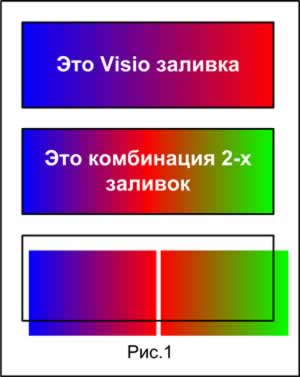

Методы создания градиентных заливок в Visio 2000.
 Как известно, Visio 2000 может создавать градиентную заливку только переходом из одного цвета в другой путем перехода через 1 цвет и только под определенным углом. Но иногда требуются более сложные построения. Мы рассмотрим некоторые приемы на полностью масштабируемых объектах.
Как известно, Visio 2000 может создавать градиентную заливку только переходом из одного цвета в другой путем перехода через 1 цвет и только под определенным углом. Но иногда требуются более сложные построения. Мы рассмотрим некоторые приемы на полностью масштабируемых объектах.
- Можно, к примеру, сделать переход через 2-3 основных цвета. Как это сделать? Берем объект, делим его пополам и остатками этого объекта делаем последовательный переход через нужные цвета. (Рис. 1)

- Таким образом, можно сделать весь видимый спектр как один масштабируемый объект. (Рис.2)
- Также можно менять насыщенность одного или другого цвета в заливке. Делается это простым смещением центра. (Рис.3)
- Если требуется сделать заливку цветом под определенным углом, то надо сделать следующее. (Рис.4)
- Повернуть фигуру на нужный угол.
- Нарисовать линию и применить команду объединения. (Shape>Operations>Union)
- После объединения будет получен уже другой объект, для которого угол поворота будет нулевым. Применяем заливку нужным переходом цвета и поворачиваем объект на тоже кол-во градусов назад.

Данную операцию можно применять для придания объекту глубины. (Рис.5)

Примечания и общие советы.
- Для масштабируемости линий можно использовать более простой метод. Для этого требуется в ShapeSheet'е, в разделе LineFormat ввести в строке LineWeight=Weight/100. После этого толщина линий будет изменяться пропорционально объекту. (Рис.6)

В начало раздела
Предыдущая статья
Следующая статья
Автор: Ничков Алексей (a.k.a. Digitall)